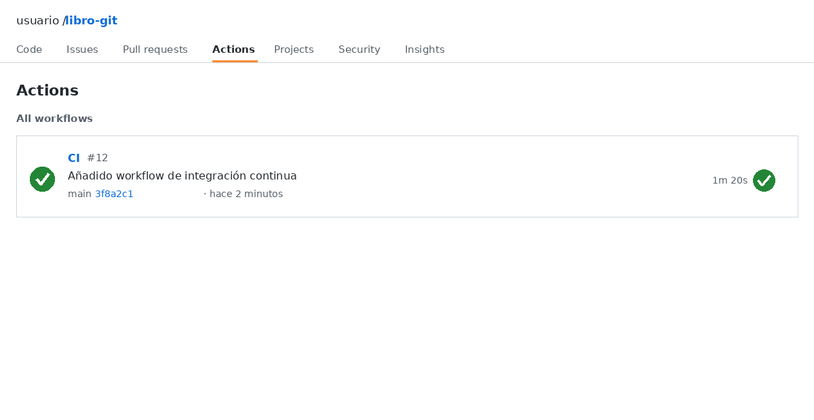
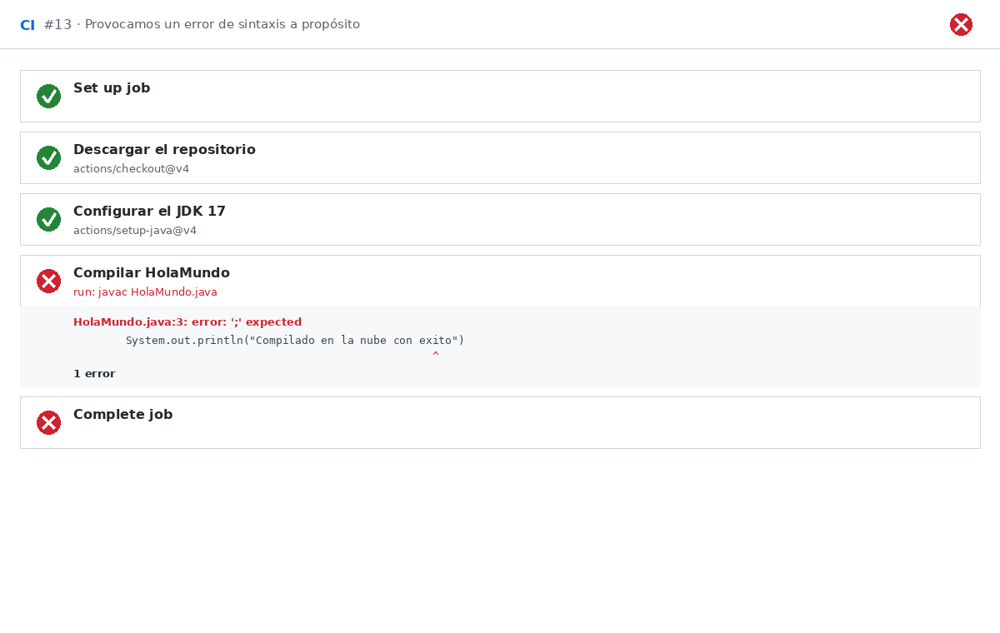

Integración continua en el ciclo de desarrollo de software
La integración continua (CI, Continuous Integration) es la práctica de integrar el trabajo de todos los miembros del equipo en un repositorio compartido de forma frecuente, y de validar automáticamente cada integración con una compilación y una batería de pruebas. Aunque la definición cabe en una frase, la idea que hay detrás merece que nos detengamos: la CI es, en esencia, una forma de detectar los problemas lo antes posible, cuando arreglarlos todavía es barato.
El problema de las integraciones tardías
Para entender por qué la CI supone una mejora tan grande, conviene imaginar cómo se trabajaba antes de que existiera. En un equipo sin integración continua, cada programador avanza en su parte del proyecto durante días o incluso semanas, y solo cuando cree que ha terminado su trabajo lo une al de los demás. Ese momento de juntar todo, que a veces se llama "el infierno de la integración", es donde aparecen los disgustos: resulta que dos personas modificaron la misma función de maneras incompatibles, que una parte del código esperaba algo que la otra ya no devuelve, o que el proyecto entero deja de compilar porque uno de los cambios rompió una pieza que nadie había probado junto a las demás.
El problema de fondo es que, cuanto más tiempo pasa sin integrar, más se aleja el trabajo de cada uno del de los demás, y más grande es la brecha que habrá que salvar de golpe. Un error introducido hace tres días es fácil de localizar; un error introducido hace tres semanas, entre cientos de cambios, puede llevar horas de búsqueda. La integración tardía convierte lo que debería ser una operación rutinaria en un acontecimiento temido, y concentra todo el riesgo al final del proyecto, justo cuando hay menos tiempo para reaccionar.
La integración continua da la vuelta a esa lógica: en lugar de integrar una sola vez y al final, se integra muchas veces y desde el principio. Cada vez que alguien sube código, el sistema lo compila automáticamente y ejecuta las pruebas. Si algo se ha roto, se sabe a los pocos minutos, y el fallo se puede atribuir con claridad al último cambio que se subió. Ese es el gran salto: pasar de descubrir los problemas semanas después a descubrirlos casi en el momento en que se crean.
Ventajas frente a los procesos manuales
Frente a los procesos manuales, donde alguien tiene que acordarse de compilar después de cada cambio, la automatización aporta tres ventajas que se notan enseguida:
- Detección temprana de errores: el propio sistema avisa de un fallo de compilación minutos después de subir el código, cuando todavía se tiene el contexto fresco y se recuerda exactamente qué se acaba de tocar. Depurar un error recién cometido es muchísimo más rápido que perseguirlo días más tarde.
- Reducción de conflictos en las fusiones: integrar cambios pequeños y frecuentes evita que dos ramas diverjan durante semanas. Si todo el mundo sincroniza a diario, la distancia entre las versiones es pequeña y los conflictos, cuando aparecen, son fáciles de resolver.
- Consistencia del estado del proyecto: todos los miembros trabajan sobre una base que se sabe que compila. Cuando alguien se descarga la última versión, tiene la garantía de que, al menos, el proyecto es coherente y compila, lo que evita perder tiempo en problemas que no son suyos.
A esto se añade una ventaja menos tangible pero igual de importante: la tranquilidad. Saber que cada cambio pasa por una verificación automática permite experimentar, refactorizar y avanzar con más seguridad, porque hay una red que avisa si algo se rompe.
Fundamentos y arquitectura de GitHub Actions
GitHub Actions es la plataforma de automatización que GitHub trae integrada de serie. Al vivir dentro del propio repositorio, no hace falta contratar ni conectar ningún servicio externo: basta con describir en un archivo qué se quiere ejecutar y cuándo, y GitHub se encarga del resto. Esa integración nativa la ha convertido en la puerta de entrada más habitual a la CI para quien ya trabaja con Git y GitHub.
Para montar un flujo de trabajo conviene tener claros los componentes que entran en juego, porque el vocabulario se repite en toda la documentación:
- Workflows (flujos de trabajo): los archivos de configuración que orquestan todo el proceso automatizado. Definen qué se ejecuta, cuándo y en qué condiciones. Se puede pensar en ellos como la "receta" que GitHub seguirá cada vez que ocurra algo relevante.
- Eventos disparadores (Events / Triggers): los sucesos que ponen en marcha un flujo de trabajo. Los más habituales son
push, cuando se suben cambios al repositorio, ypull_request, cuando se abre o actualiza una solicitud de fusión. Son el "cuándo" del flujo. - Trabajos (Jobs): cada flujo se divide en uno o varios trabajos, que son conjuntos de pasos secuenciales ejecutados en un mismo entorno. Por defecto, los distintos trabajos se lanzan en paralelo, lo que permite, por ejemplo, probar el proyecto en varios sistemas operativos a la vez.
- Pasos (Steps): las tareas individuales que componen un trabajo, ya sea un comando que se lanza o una acción que se reutiliza. Son las piezas mínimas de la receta.
- Acciones (Actions): módulos reutilizables, publicados por la comunidad o por el propio GitHub, que encapsulan tareas habituales (descargar el código, preparar un JDK, subir un artefacto, etc.). Usar una acción ya hecha evita tener que reinventar lo que miles de proyectos ya resuelven.
- Runners (entornos de ejecución): las máquinas virtuales que GitHub levanta en la nube para ejecutar los trabajos. Se eligen con una etiqueta como
ubuntu-latest, que indica el sistema operativo del entorno.
El concepto de runner merece una explicación aparte, porque es la pieza que más cuesta imaginar. Un runner es una máquina virtual temporal y limpia que GitHub crea en la nube solo para esa ejecución concreta. Arranca vacía, como un ordenador recién instalado que no tiene absolutamente nada: ni el código del proyecto, ni Java, ni ninguna configuración previa. Sobre esa máquina se van ejecutando los pasos del trabajo, y cuando el trabajo termina, el runner se destruye por completo. Esa limpieza tiene una consecuencia importantísima: si la compilación funciona en el runner, es porque el proyecto realmente se sostiene por sí mismo, sin depender de nada "raro" que hubiera en el ordenador de quien lo programó. Nadie puede decir aquello de "en mi máquina funcionaba".
Todo esto vive en una carpeta con una ubicación fija dentro del repositorio: .github/workflows/. Ese convenio no es opcional: si los archivos de flujo no están ahí, GitHub nunca llegará a encontrarlos. Es la primera trampa en la que cae todo el mundo al empezar, así que conviene memorizar la ruta.
Creación y configuración de un flujo de trabajo básico (YAML)
Los flujos de trabajo se describen en YAML, un formato de texto pensado para ser legible por personas, con una sintaxis basada en pares clave-valor y una indentación estricta. Esa indentación no es decorativa: marca la jerarquía de las claves y, por tanto, es parte del significado del archivo. Un espacio de más o de menos puede cambiar por completo lo que el flujo hace, o hacer que directamente no funcione. Es una de las peculiaridades que más sorprende al principio: en YAML, el orden y la posición de los espacios importan tanto como las palabras.
Para el ejemplo guiado vamos a usar un programa Java mínimo, sin gestores de dependencias ni nada que estorbe. Un simple HolaMundo.java basta para ver la maquinaria en acción:
public class HolaMundo {
public static void main(String[] args) {
System.out.println("Compilado en la nube con exito");
}
}
El flujo vive en .github/workflows/ci.yml. El punto de partida es darle un nombre y decirle a GitHub cuándo debe dispararse:
Con on: push, cada vez que se suban cambios al repositorio se lanzará la validación. El name es solo una etiqueta que aparecerá en la interfaz de GitHub, pero ayuda a identificar el flujo cuando hay varios.
El siguiente ajuste crítico es el entorno. Con runs-on se elige el runner sobre el que correrá el trabajo:
Aquí estamos creando un trabajo llamado build que se ejecutará sobre una máquina virtual Ubuntu. Ese ubuntu-latest es lo que hace que GitHub levante un runner temporal nuevo para la ocasión.
El trabajo se compone de pasos. El primero casi siempre es descargar el código en el runner, porque, como decíamos, la máquina virtual arranca completamente vacía. Para eso está la acción estándar actions/checkout:
Este paso merece un comentario, porque es de los que más despistan: si el runner está vacío y no se descarga el código, los siguientes pasos no tendrían nada que compilar. actions/checkout es el paso que trae el contenido del repositorio a la máquina virtual, y por eso aparece siempre en primer lugar. Sin él, todo lo demás falla estrepitosamente.
Con el código ya en el entorno, toca preparar el JDK. La acción actions/setup-java permite indicar la distribución y la versión exacta de Java que necesita el proyecto:
- name: Configurar el JDK 17
uses: actions/setup-java@v4
with:
distribution: temurin
java-version: '17'
El bloque with sirve para pasarle parámetros a la acción. Aquí se le dice que use la distribución temurin (una de las más habituales) y la versión 17 del JDK. Fijar la versión es importante para que la compilación en la nube sea idéntica a la de nuestro equipo y no dé sorpresas.
Queda el paso que da sentido a todo lo anterior: compilar. Al no haber gestor de dependencias de por medio, basta con lanzar javac directamente sobre el archivo:
Las sentencias run ejecutan comandos de shell tal cual sobre el runner, así que aquí es donde de verdad se comprueba si el código es correcto. Si javac termina bien, el paso se marca en verde; si encuentra un error, el paso falla y con él toda la ejecución.
¿Dónde está el archivo .java?
Este ejemplo sitúa HolaMundo.java en la raíz del repositorio, al mismo nivel que la carpeta .github, y por eso el comando javac HolaMundo.java lo encuentra directamente. En un proyecto real creado con un IDE, el código suele vivir dentro de una carpeta src/ y, a menudo, anidado en subcarpetas que reproducen los paquetes. En ese caso el comando debe incluir la ruta completa: por ejemplo, javac src/HolaMundo.java, o javac src/es/cipsa/HolaMundo.java si la clase pertenece al paquete es.cipsa. La causa más habitual del error file not found al trasladar este flujo a un proyecto real es precisamente esa: el run busca el archivo en la raíz y el archivo está en otro directorio.
Juntando las piezas, el archivo completo, comentado línea a línea, queda así:
# Nombre del flujo, el que aparecerá en la pestaña Actions de GitHub
name: CI
# Evento que dispara el flujo: cada vez que se hace push al repositorio
on: push
jobs:
build:
# Máquina virtual en la nube donde se ejecuta el trabajo
runs-on: ubuntu-latest
steps:
# Descarga el código del repositorio en el runner
- name: Descargar el repositorio
uses: actions/checkout@v4
# Prepara el entorno Java: distribución y versión del JDK
- name: Configurar el JDK 17
uses: actions/setup-java@v4
with:
distribution: temurin
java-version: '17'
# Compila el programa; si hay un error, el flujo se marca en rojo
- name: Compilar HolaMundo
run: javac HolaMundo.java
El ciclo de vida de la CI: verificación, detección de fallos y corrección
Con el archivo guardado y subido al repositorio, cada push lanzará el flujo automáticamente. El resultado se consulta desde la pestaña Actions del repositorio, que es el centro de control de toda la automatización, y se lee de un vistazo gracias al código de colores: un icono verde indica que la ejecución se ha superado sin problemas, mientras que un icono rojo avisa de que algún paso ha fallado. Ese simple semáforo es lo que permite saber si el proyecto está sano sin abrir una terminal ni descargarse nada.
Con el HolaMundo.java correcto, la ejecución aparece en verde, y el paso de compilación muestra la marca de Success:

Ahora llega la parte interesante, que es provocar un fallo a propósito para entender cómo reacciona el sistema. Este ejercicio, que parece un poco absurdo, es en realidad la mejor forma de aprender: romper el código a conciencia permite ver con claridad qué pasa cuando algo va mal, sin la presión de que sea un error real. Abrimos HolaMundo.java, borramos el punto y coma de la línea del System.out.println y subimos el cambio con git push. A los pocos segundos, la pestaña Actions marca esa ejecución en rojo.
El siguiente movimiento es inspeccionar los logs, los registros de lo que ha ocurrido durante la ejecución. Al entrar en la ejecución fallida, GitHub despliega la lista de pasos del runner y el paso de compilación aparece con una X. Si desplegamos su salida, encontramos la salida de la consola tal cual, y ahí está el diagnóstico: el compilador señala la línea exacta del problema con un error: ';' expected, apuntando con una flecha al lugar donde falta el punto y coma. Es el mismo mensaje que se vería al compilar en local, pero llega envuelto en un registro persistente al que cualquiera del equipo puede acceder después.

Ese detalle de poder leer el error directamente en la nube, sin descargarse el código ni reproducirlo en local, es una de las grandes comodidades de la CI. Si el fallo lo introduce otra persona, cualquiera puede abrir el log y ver qué pasó, sin tener que preguntarle ni esperar a que lo arregle.
Con el error localizado, la corrección es cuestión de segundos: reponemos el punto y coma, hacemos git push y la siguiente ejecución vuelve al verde. Ese ciclo, compilar bien, romperlo a propósito y arreglarlo, es exactamente la integración continua en acción. El fallo se detectó minutos después de introducirlo, quedó registrado en el historial de ejecuciones y se corrigió de inmediato. Si este mismo ciclo se repite con cada cambio del equipo, el proyecto nunca llega demasiado lejos de un estado que funciona, y los problemas se atajan antes de que crezcan.